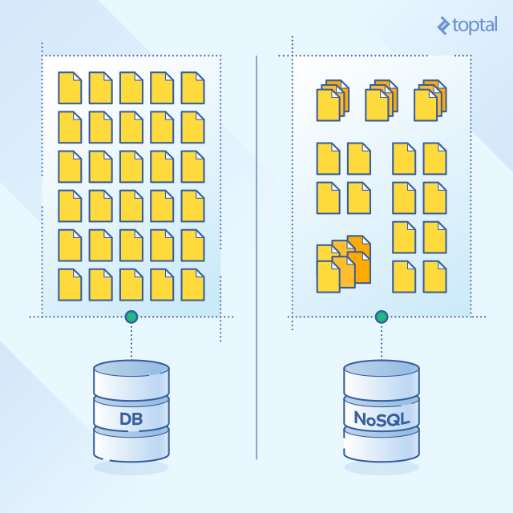
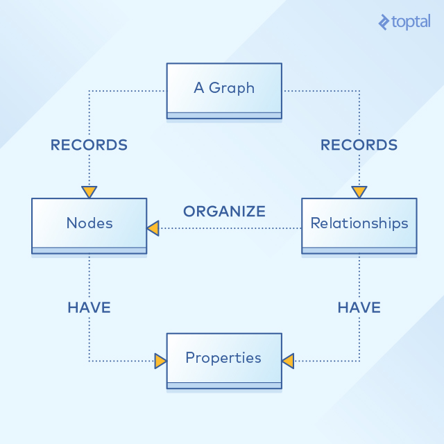

NoSQL数据库权威指南
毫无疑问，近几年来，web应用对数据的处理发生了重大的变化。与过去相比，现在会收集更多的数据，更多的用户有获取这一数据的权限。这意味着，基于模式的关系型数据库在可拓展性和性能方面比过去有了更大困难，因此可能更加难以拓展。
NoSQL的演变
SQL拓展性问题被哪些有巨大的，增加的数据和基础架构需求的Web2.0公司们认可，如Google，Amazon和Facebook。他们各自想出了它们各自对于这个问题的解决方案技术——BigTable，DynamoDB和Cassandra。
大量的NoSQL数据因为这种快速增长的利益而被发明，它们专注于性能，可靠性和持久性。许多现有的索引结构被重用和改进目的是增强搜索性能和读取性能。
起初，闭源的NoSQL数据被大公司开发出来以满足他们自己特定的需求，例如被认为是第一个NoSQL系统的Google的BigTable和Amazon的DynamoDB。
这些闭源的系统的成功引起了一大批类似的开源和闭源数据系统的开发，最为著名的是：Hypertable，Cassandra，MongoDB，DynamoDB，HBase和Redis。
是什么使NoSQL与众不同
NoSQL数据库和传统关系型数据库的一个主要的不同就是NoSQL是一种非结构化存储形式。

这意味着NoSQL没有类似于传统数据库中的固定表结构。
NoSQL数据库的优缺点
优点
- 一个主要的基本的却别就是NoSQL数据库拥有一个简单的灵活的结构，他们是无模式的。与传统数据库不同，他们是基于键-值对的。
- NoSQL的存储类型包括列存储，文档存储，键值存储，图形存储，对象存储，XML存储和其他数据存储模式。
- 通常数据库中的每个值都有一个键。但一些NoSQL数据库也允许开发者向数据库中存储序列化对象，而不是简单的字符串值
- 开源的NoSQL数据库不需要昂贵的许可费用，可以运行在廉价的硬件上，部署成本极低
- 使用NoSQL数据库时，无论它们是否开源或者闭源，拓展都比传统数据库要更简单更便宜。这是因为NoSQL通过水平拓展，在左右节点上分配负载，而不像关系型数据库的垂直布局需要一个更强大的主控主机。
缺点
当然，NoSQL也不是完美的，它们不会总是对的选择。
- 大部分NoSQL并不支持关系数据库本身就支持的可靠性特性：原子性，一致性，隔离度和持久性。NoSQL为了性能和拓展新牺牲了这些特性
- 为了支持可靠性和一致性特性，开发者需要实现它们自己的闭源代码，从而给系统增加了复杂程度。
这些缺点可以能限制了一些应用因为安全和可靠性原因而不能依靠NoSQL来实现，如银行系统。另外还有大部分NoSQL数据库与SQL查询不兼容，这意味着需要需要手动或专有的查询语言，从而增加了复杂度和开发周期。
NoSQL vs 关系型数据库
下表展示了一些主要特性的对比：
| Feature | NoSQL Databases | Relational Databases |
|---|---|---|
| Performance | High | Low |
| Reliability | Poor | Good |
| Availability | Good | Good |
| Consistency | Poor | Good |
| Data Storage | Optimized for huge data | Medium sized to large |
| Scalability | High | High (but more expensive) |
这张表格对比的是数据库而言，具体的数据库会因为自己的技术而克服某些问题和缺点。
NoSQL数据存储类型
键值存储
在键值存储方式中，使用hash表中的一个唯一键指向一个item。
只要这些键值是独一无二的，就可以被组成一个逻辑组的键。因此在不同的逻辑组中，允许有相同的键。下面的表格展示了一个键-值存储的例子。
| Key | Value |
|---|---|
| “Belfast” | {“University of Ulster, Belfast campus, York Street, Belfast, BT15 1ED”} |
| “Coleraine” | {“University of Ulster, Coleraine campus, Cromore Road, Co. Londonderry, BT52 1SA”} |
一些键值存储的实现方式里提供了缓存机制，可以极大的提高它们的性能。
这种存储方式里所有要做的就是处理好键，数据可以以String，JSON，BLOB(Binary Large OBject)格式存储。
这个存储方式的数据库最大的不足就是数据库级别缺乏一致性。虽然开发者可以自己用代码实现，但是，这会要求更多的努力，复杂性和时间。
用键值存储的最出名的NoSQL数据库时Amazon的DynamoDB。
文件存储
文件存储和键值存储相类似，都是没有模式，基于键-值模型。因此两者有很多相同的优点和缺点。
然而，两者有着一些重要的差别。
文件存储中，值（文件）为数据存储提供了编码方式如：XML，JSON或者BSON(Binary encoded JSON)。也可以进行基于数据的查询。
最流行的文件存储的数据库应用是MongoDB。
列存储
在列存储数据中，数据以列的形式存储，而不是关系数据管理系统那样的以行的形式存储。
列存储由一个或多个列族组成，逻辑上将数据库的列分组。一个键使用定义作用域的keyspace属性用来标识指向数据库中的一些列。 每列包含名称和值，有序的，逗号分隔的元组。
列存储拥有很快的读／写速度。列存储中，对一个单独列的行被存储成一个单独的盘入口，这使得读写操作中有更快的速度。
使用列存储的最火的数据库是Google的BigTable，HBase和Cassandra。
图形基础
在图形基础的NoSQL数据库中，一个有向图像结构来表示数据。图形由边界和节点组成。
形式上，图形代表是一组对象，一些对象通过链接连接起来。互相连接的对象由数学抽象表示，称为顶点，而链接顶点对的链接成为边。一组顶点和连接的边成为图形。

这个图片阐释了图形基础数据使用边和节点来表示和存储数据的结构。这些节点依据一些表示为节点间边的关系来组织。节点和关系都有一些定义的属性
图形基础数据库主要被用在社交网络应用上。它使得开发者把更多的精力用在对象的关系上而不是对象自身伤。这样，它可以实现一个可拓展、更易使用的环境
目前，InfoGrid和InfiniteGraph是最火的图形基础数据库
NoSQL数据库管理系统
下表提供了一个简单的主要系统之间的比较：
| Storage Type | Query Method | Interface | Programming Language | Open Source | Replication | |
|---|---|---|---|---|---|---|
| Cassandra | Column Store | Thrift API | Thrift | Java | Yes | Async |
| MongoDB | Document Store | Mongo Query | TCP/IP | C++ | Yes | Async |
| HyperTable | Column Store | HQL | Thrift | Java | Yes | Async |
| CouchDB | Document Store | MapReduce | REST | Erlang | Yes | Async |
| BigTable | Column Store | MapReduce | TCP/IP | C++ | No | Async |
| HBase | Column Store | MapReduce | REST | Java | Yes | Async |